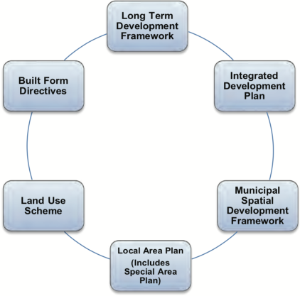

COVID-19 Regulations
Some municipal functions such as public transport, restaurant hours and liquor sales are impacted by recent national COVID-19 regulations.Read the COVID-19 regulations.
This is the version of this By-law as it was from
31 August 2017 to 19 December 2019.
Read the version currently in force.
eThekwini
South Africa
South Africa
Planning and Land Use Management By-law, 2016
- Published in KwaZulu-Natal Provincial Gazette no. 1871 on 31 August 2017
- Commenced on 31 August 2017
- [Up to date as at 31 May 2021]
Preamble
WHEREAS the Municipality has competence in terms of Part B of Schedule 4 of the Constitution to administer matters pertaining to municipal planning;WHEREAS the Municipality must contribute to the progressive realisation of fundamental rights contained in the Constitution;WHEREAS the Municipality is committed to sustainable, developmentally orientated and integrated developmental municipal planning;WHEREAS the Municipality must promote the development principles of spatial justice; spatial sustainability; spatial resilience; efficiency and good administration in municipal planning;WHEREAS the Municipality must observe and enforce compliance of its land use scheme;WHEREAS the Municipality must maintain open, transparent and sound accountable practices in its planning administration;WHEREAS the Municipality recognises the principles of co-operative government in planning matters in order to provide for open, transparent and accountable government;AND WHEREAS the Municipality recognises the need to facilitate the involvement of the community and public participation in planning processes and developments;NOW THEREFORE The Municipal Council of the eThekwini Metropolitan Municipality, acting in terms of section 156 read with Part B of Schedule 4 of the Constitution of the Republic of South Africa, and read with section 11 of the Local Government: Municipal Systems Act, 2000 (Act No. 32 of 2000), hereby makes the following By-law:Chapter 1
Interpretation
1. Definitions
In this By-law, unless the context indicates otherwise–"adjoining owner" means any owner whose land shares a common boundary or corner beacon with the land which is the subject of the land development application, and includes the owner whose land may be separated by a road;"affected owner" means any owner of land whom the Municipality may consider to be affected by a land development application; and may include a Traditional Authority;"Appeal Authority" means an appeal authority contemplated in terms of Chapter 12 of this By-law;"applicant" means any person who makes a land development application as contemplated in section 21(4) of this By-law;"authorisation" means any authorisation or authorisations required in terms of applicable legislation issued by an organ of state which must be lodged with a land development application, including but not limited to–(a)a Record of Decision pursuant to an Environment Impact Assessment issued in terms of the National Environmental Management Act, 1998 (Act No. 107 of 1998);(b)a Water Use Licence issued in terms of the National Water Act, 1998 (Act No. 36 of 1998); or(c)any authority which has been issued in terms of the Subdivision of Agricultural Land Act, 1970 (Act No. 70 of 1970);"authorised official" means a person authorised to implement the provisions of this By-law, including but not limited to–(a)peace officers as contemplated in section 334 of the Criminal Procedure Act, 1977 (Act No. 51 of 1977);(b)municipal or metropolitan Police Officers as contemplated in the South African Police Service Act, 1995 (Act No. 68 of 1995); and(c)such enforcement officers employees, agents, delegated nominees, representatives and service providers of the Municipality as are specifically authorised by the Municipality in this regard: Provided that for the purposes of search and seizure, where such person is not a peace officer, such person must be accompanied by a peace officer;"Category 2 application" means a complete application which is categorised for consideration and decision making by the Tribunal;"Category 3 application" means a complete application which is categorised for consideration and decision making by the Head;"Category 4 application" means a complete application which is categorised for consideration and decision making by the Deputy Head;"circulated application" means an application made to the Municipality for approval, and excludes a land development application;"Code of Conduct" means a written code setting out rules and standards relating to the ethics, practice and conduct of the members of the Tribunal;"combined application" means an application which contains multiple types of land development applications which may be combined and considered in its entirety as provided for in Chapter 8 of this By-law;"complete application" means a land development application which is ready to be advertised or has undergone the pre-submission process, and is accompanied by, including but not limited to, payment of the prescribed application fee, authorisations, comments and specialist reports and studies;"compliance certificate" means a certificate issued on−(a)compliance by an applicant with the conditions of approval contained in a decision notice within six months from the date of notification of the commencement of any operations on the land; or(b)resolution of a contravention;"consolidation" means where two or more erven are combined to form a new erf;"Constitution" means the Constitution of the Republic of South Africa, 1996;"contravention" means a contravention of the land use scheme, a contravention of a condition of approval contained in a decision notice or a contravention of a provision of this By-law;"contravention notice" means a notice served by the Municipality on an owner or person who has committed or is suspected of committing a contravention;"Council" or “Municipal Council” means the eThekwini Municipal Council, a municipal council referred to in section 157(1) of the Constitution;"days" means business days, which excludes Saturdays, Sundays and Public Holidays;"decision maker" means the Tribunal, Head or Deputy Head as the case may be;"decision notice" means the written notification of the outcome of a land development application;"Deeds Registry" means a deeds registry as defined in section 102 of the Deeds Registries Act, 1937 (Act. 47 of 1937);"Deputy Head" means the Deputy Head of the relevant department dealing with development planning, environment and management who has been authorised by the Municipality as contemplated in terms of section 35(2) of SPLUMA to consider and determine land development applications;"development principles" means the principles of spatial justice, spatial sustainability, efficiency, spatial resilience and good administration as contemplated in Chapter 2 of SPLUMA;"development rights" means a development right which is conferred on land by virtue of its zoning; includes a pre-scheme or non-conforming use right and which may be subject to specialist studies;"diagram" means a diagram as defined in terms of section 1 of the Land Survey Act, 1997 (Act No. 8 of 1997);"environmental management instrument" means an environmental management instrument contemplated in section 24(5)(bA) of the National Environmental Management Act, 1998(Act No. 107 of 1998);"Executive Authority" means the executive committee or executive mayor of eThekwini Municipality as the case may be, as contemplated by section 44(2) of the Local Government: Municipal Structures Act, 1998 (Act No. 117 of 1998);"exemption" means a provision contained in the land use scheme where the consent of adjoining or affected owners is required for a particular type of land development application;"general plan" means a general plan as defined in section 1 of the Land Survey Act, 1997 (Act No. 8 of 1997);"guidelines for social facilities and open spaces" means a set of guidelines adopted by Council which provides the standards to be applied for the provision of social facilities and open spaces within the eThekwini Municipal area;"Head" means the Head of the relevant department dealing with development planning, environment and management who has been authorised by the Municipality as contemplated in terms of section 35(2) of SPLUMA to consider and determine land development applications;"IDP" means an Integrated Development Plan as contemplated in terms of section 25 of the Systems Act;"intervener" means an interested person who has been granted intervener status by a decision maker or the Appeal Authority in terms of section 86 of this By-law;"Joint Advisory Committee" means an advisory committee established in terms of section30 of this By-law comprising of municipal officials who are Registered Plannersand who make recommendations to a decision maker on land development applications;"land" means any erf, plot, stand, farm portion, or agricultural holding and includes any improvement or building on the land, any real right or share in land and includes land in the area of a Traditional Authority;"land development" means the change of use of land, including township establishment, the subdivision or consolidation of land or any deviation from the land uses or uses permitted in terms of the land use scheme;"land development application" means an application for land development lodged with the Municipality for consideration and decision making and “application” shall have a corresponding meaning;"land use" means the purpose for which land is or may be used lawfully in terms of the land use scheme, this By-law, an existing scheme or in terms of any other authorisation, permit or consent issued by a competent authority, and includes any conditions related to such land use purposes;"land use scheme" means the adopted scheme regulations and maps of each region, including the register of amendments to the scheme and “scheme” shall have a corresponding meaning;"local area plan" means an intermediary combination plan containing local area and functional area plans on a strategic level;"Municipality" means eThekwini Municipality, a category A Municipality as envisaged in terms of section 155(1) of the Constitution;"Municipal Manager" means a person appointed in terms of section 54A of the Systems Act as the head of administration of the Municipal Council;"Municipal Spatial Development Framework" means a spatial development framework adopted in terms of Chapter 5 of this By-law;"newspaper" means a local daily newspaper circulating in the region of the eThekwini Municipal area;"organ of state" means an organ of state as contemplated in terms of section 239 of the Constitution, and includes a state owned enterprise;"owner" means the person registered in the Deeds Registry as the owner of land, and includes the beneficial owner of the land, and the owner of land by virtue of vesting in terms of any applicable law;"package of plans" means a suite of plans which guides integrated planning in the Municipality as referred to in section 11 of this By-law;"person" includes natural and juristic persons, partnerships, trusts, body corporates, home owners associations and organs of state;"Planning and Development Act" means the KwaZulu-Natal Planning and Development Act, 2008 (Act No. 6 of 2008);"private road" refers to a street, thoroughfare, path or roadway where the naming rights for that road does not vest in the Municipality;"public road" refers to a municipal road where the naming rights for that road vests in the Municipality and includes a street, thoroughfare, path or roadway;"public open space" means any open place, park, street, road or thoroughfare or other similar area of land shown on a general plan or diagram which is for use by the general public and is owned by or vests in the Municipality or any other organ of state, and includes a public open space and a servitude for any similar purpose in favour of the general public;"public notice" means the notification of a land development application by publication of a notice in the newspaper, the display of a site notice, and service of a notice on adjoining owners, the ward councillor, organ of state and where applicable affected owners for the purposes of public participation in terms of Chapter 9 of this By-law;"Regional Co-ordinator" means a municipal official who is a Registered Planner dealing with land use and land use management;"Registered Planner" means a person who is registered as a professional planner or a technical planner as contemplated in the Planning Profession Act, 2002 (Act No. 36 of 2002) as amended;"Regional offices" means the five regional offices for the Durban Central, Durban South, Durban North, Inner West and Outer West regions;"relaxation" means an application for the relaxation of any building line, side or rear space as determined in terms of the land use scheme;"service" means the delivery of a notice, order or other document in terms of this Bylaw and “serve" shall have a corresponding meaning;"SPLUMA" means the Spatial Land Use and Management Act, 2013 (Act No. 16 of 2013);"SPLUMA office" means the Municipality’s Central office for the processing of applications and all matters relating to applications and appeals;"subdivision" means the division of land into two or more pieces;"Systems Act" meansthe Local Government: Municipal Systems Act, 2000 (Act No. 32 of 2000);"Tribunal" means the Municipal Planning Tribunal established in terms section 38 of this By-law;"township" means land divided into 11erven or more and includes private and public open places and roads as indicated on the general plan; and"Traditional Authority" means the Traditional Council of any land administered in terms of traditional land use practices and situated within the eThekwini Municipal Area, and includes the Ingonyama Trust Board where applicable.2. Interpretation of By-law
If there is a conflict of interpretation between the English version of this By-law and a translated version, the English version prevails.Chapter 2
Objects of by-law
3. Objects of By-law
The objects of this By-law are to–(a)provide for a package of plans which shall inform the social, economic, environmental and infrastructural development in the Municipality;(b)provide a uniform, effective, comprehensive, and interrelated framework for spatial planning and land use management;(c)provide for the inclusive, developmental, equitable and efficient planning in the spirit of co-operative governance;(d)provide a framework for co-operative and cross-border relationships with all spheres of Government and to ensure the integration of planning between the Municipality and neighbouring Municipalities;(e)provide a framework for policies, principles, norms and standards for spatial development planning and land use management;(f)provide a framework for the monitoring, coordination and review of the spatial planning and land use management system;(g)regulate land development application and decision-making procedures;(h)provide for the establishment, functions and operations of the Tribunal;(i)provide for facilitation and enforcement of land use and development measures;(j)provide for an appeal authority; and(k)provide penalties for breach of its provisions.Chapter 3
Application
4. Application of By-law
This By-law applies to all land which falls within the municipal area under eThekwini Municipality and is binding on all persons to the extent applicable.Chapter 4
Planning functions of the three spheres of government
5. Municipal planning
Municipal planning, as provided for in SPLUMA, consists of the following elements:(a)the compilation, approval and review of IDPs;(b)the compilation, approval and review of the components of an IDP prescribed by legislation and falling within the competence of a municipality, including a spatial development framework and a land use scheme; and(c)the control and regulation of the use of land within the municipal area where the nature, scale and intensity of the land use do not affect the provincial planning mandate of provincial government or the national interest.6. Provincial planning
Provincial planning, as provided for in SPLUMA, consists of the following elements:(a)the compilation, approval and review of a provincial spatial development framework, approval, review and implementation of land use management systems;(b)the planning by a province for the efficient and sustainable execution of its legislative and executive powers insofar as they relate to the development of land and the change of land use; and(c)the making and review of policies and laws necessary to implement provincial planning.7. National planning
National planning, as provided for in SPLUMA, consists of the following elements:(a)the compilation, approval and review of spatial development plans and policies or similar instruments, including a national spatial development framework;(b)the planning by the national sphere for the efficient and sustainable execution of its legislative and executive powers insofar as they relate to the development of land and the change of land use; and(c)the making and review of policies and laws necessary to implement national planning, including the measures designed to monitor and support other spheres in the performance of their spatial planning, land use management and land development functions.Chapter 5
Municipal spatial development framework
8. Status of Municipal Spatial Development Framework
9. Preparation and application of Municipal Spatial Development Framework
10. Content of Municipal Spatial Development Framework
11. Package of plans

12. Adoption of a Municipal Spatial Development Framework
Chapter 6
Land use scheme
13. Resolution to prepare a land use scheme
The Municipal Council must adopt a resolution to commence the preparation of a land use scheme where no land use scheme exists.14. Preparation of a land use scheme
15. Purpose and content of land use scheme
16. Legal effect of a land use scheme
17. Amendment of municipal boundaries
Where the boundaries of a municipal area are changed or altered, the affected municipalities must in consultation with each other, amend their respective land use schemes accordingly and, until the necessary amendments are effected, the provisions of the land use schemes remain in force in the areas in which they applied before the boundary changed, and the Municipalities may agree as to whom must assume responsibility for their enforcement.18. Amendment of land use scheme and rezoning
19. Review and monitoring of land use scheme
20. Record of amendments for land use scheme
Chapter 7
Land development applications
21. Land development applications
22. Planning enquiry
23. Submission of a land development application
24. Complete application
Chapter 8
Categorisation of land development applications
25. Categorisation of land development applications
26. Category 1 land development determinations
27. Category 2 land development applications
28. Category 3 land development applications
29. Category 4 land development applications
30. Joint Advisory Committee
31. Commenting on circulated applications
The Head may make a recommendation for approval or refusal of any circulated application received by an internal line department for comment.Chapter 9
Public participation
32. Types of land development applications which require public participation
33. Public participation
34. Form of public participation
35. Proof of public participation
36. Objections to land development applications
37. Amended land development applications
Chapter 10
Municipal planning tribunal
38. Establishment of the Tribunal
39. Procedure to appoint a member of the Tribunal
40. Composition of the Tribunal
41. Appointment of Chairperson
42. Term of office of members of Tribunal
The Municipal Council may appoint an external member to serve on the Tribunal for five years or such shorter period as the Council may determine.43. Disqualification from membership of Tribunal
Chapter 11
Decisions on land development applications
44. Deciding a land development application
45. Functions and powers of the decision maker
46. Decision making
47. Conditional approval of land development application
48. Notification to Surveyor-General and Registrar of Deeds
A decision maker must, within the prescribed period after a land use decision affecting the use of land not in accordance with a condition in a title deed, notify the–(a)Registrar of Deeds in whose office the deed or document is filed of such approval; and(b)Office of the Surveyor-General, where such approval affects a diagram or general plan filed in that office.49. Removal, amendment and suspension of restrictive conditions
50. Township establishment
51. Closure of roads and public open spaces
52. Land for parks, public open spaces and social facilities
53. Consultation with other land development authorities
54. Authorisations
Chapter 12
Appeals
55. Appeal Authority
56. Powers of the Appeal Authority
The Appeal Authority may–(a)uphold or dismiss an appeal and impose any conditions with regard to the subject of an appeal;(b)make any appropriate determination regarding all matters necessary or incidental to the performance of its functions in terms of this By-law;(c)conduct any necessary investigation including site inspections;(d)decide any question concerning its own jurisdiction;(e)subpoena any person to appear before it;(f)on its own initiative, obtain expert evidence or opinion;(g)condone any failure by any party to an appeal to comply with any directions given by the Appeal Authority; and(h)postpone the matter for a reasonable period to obtain further information or advice.57. Declaration of conflict of interest
58. Powers and duties of presiding officer
59. Conduct of Appeal Authority
The conduct of the Appeal Authority at a hearing must be impartial and must not prejudice or promote the interests of any party to the hearing.60. Lodging of appeal
61. Access to records
Any person who requires access to records or documents relating to a land development application must make such request in writing.62. Notice of appeal
63. Pre-screening of appeal
64. Hearings of Appeal Authority
65. Postponement of an appeal hearing
66. Appeal considered on written submissions
67. Oral hearing
68. Oral hearing of appeal in absence of parties
The Appeal Authority may, after a Notice of Appeal Hearing has been served on all the parties, hear an oral appeal in the absence of an appellant or any other party if–(a)such appellant or other party has notified the appeal authority that he or she does not wish to be present at the hearing; or(b)such appellant or any other party fails to attend the hearing without providing a reason for non-attendance which, in the sole discretion of the Appeal Authority, is sufficient to justify an adjournment of the hearing.69. Determination of appeal
70. Records of appeal hearing
71. Fees
Chapter 13
Compliance and enforcement
72. Appointment of enforcement officer
73. Functions and powers of enforcement officers
74. Warrant
75. Lodging and investigation of complaints
76. Contravention notice
77. Urgency
78. Compliance certificate
A contravention notice remains in force until it has been complied with to the satisfaction of the Municipality, and the Municipality has issued a compliance certificate to that effect.Chapter 14
Traditional areas
79. Agreements with Traditional Authority
Chapter 15
Allocation of street numbers and road naming
80. Submission of street numbers and road names in land development applications
81. Naming of private roads
82. Naming of public roads
83. Street numbers and road names of existing buildings
Chapter 16
Offences and penalties
84. Offences
85. Penalties
Chapter 17
Miscellaneous provisions
86. Application for intervener status
87. Change of ownership
88. Cession of rights in respect of objections or comments
89. Service and receipt of notices
90. Delegations
91. Transitional provisions
In the absence of a cadastrally based Spatial Development Framework, all local area plans and functional area plans adopted by Council shall also be used to direct and manage development.92. Short title and commencement
This By-law is called the Planning and Land Use Management By-law, 2016 and takes effect on the date of publication thereof in the Provincial Gazette.- Entire By-law
- Preface
- Preamble
- Chapter 1 – Interpretation
- Chapter 2 – Objects of by-law
- Chapter 3 – Application
- Chapter 4 – Planning functions of the three spheres of government
- Chapter 5 – Municipal spatial development framework
-
Chapter 6 – Land use scheme
- 13. Resolution to prepare a land use scheme
- 14. Preparation of a land use scheme
- 15. Purpose and content of land use scheme
- 16. Legal effect of a land use scheme
- 17. Amendment of municipal boundaries
- 18. Amendment of land use scheme and rezoning
- 19. Review and monitoring of land use scheme
- 20. Record of amendments for land use scheme
- Chapter 7 – Land development applications
-
Chapter 8 – Categorisation of land development applications
- 25. Categorisation of land development applications
- 26. Category 1 land development determinations
- 27. Category 2 land development applications
- 28. Category 3 land development applications
- 29. Category 4 land development applications
- 30. Joint Advisory Committee
- 31. Commenting on circulated applications
- Chapter 9 – Public participation
- Chapter 10 – Municipal planning tribunal
-
Chapter 11 – Decisions on land development applications
- 44. Deciding a land development application
- 45. Functions and powers of the decision maker
- 46. Decision making
- 47. Conditional approval of land development application
- 48. Notification to Surveyor-General and Registrar of Deeds
- 49. Removal, amendment and suspension of restrictive conditions
- 50. Township establishment
- 51. Closure of roads and public open spaces
- 52. Land for parks, public open spaces and social facilities
- 53. Consultation with other land development authorities
- 54. Authorisations
-
Chapter 12 – Appeals
- 55. Appeal Authority
- 56. Powers of the Appeal Authority
- 57. Declaration of conflict of interest
- 58. Powers and duties of presiding officer
- 59. Conduct of Appeal Authority
- 60. Lodging of appeal
- 61. Access to records
- 62. Notice of appeal
- 63. Pre-screening of appeal
- 64. Hearings of Appeal Authority
- 65. Postponement of an appeal hearing
- 66. Appeal considered on written submissions
- 67. Oral hearing
- 68. Oral hearing of appeal in absence of parties
- 69. Determination of appeal
- 70. Records of appeal hearing
- 71. Fees
- Chapter 13 – Compliance and enforcement
- Chapter 14 – Traditional areas
- Chapter 15 – Allocation of street numbers and road naming
- Chapter 16 – Offences and penalties
- Chapter 17 – Miscellaneous provisions
History of this By-law
-
20 December 2019
Amended by Planning and Land Use Management: AmendmentRead this version -
31 August 2017 this version
Published in KwaZulu-Natal Provincial Gazette no. 1871By-law commences.
Download for later
Download the current version of this By-law to read later on your desktop, e-reader or tablet.
eThekwini